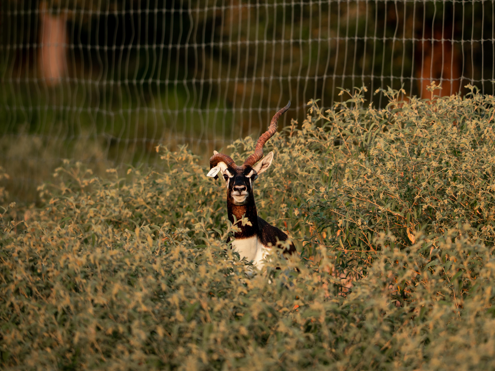
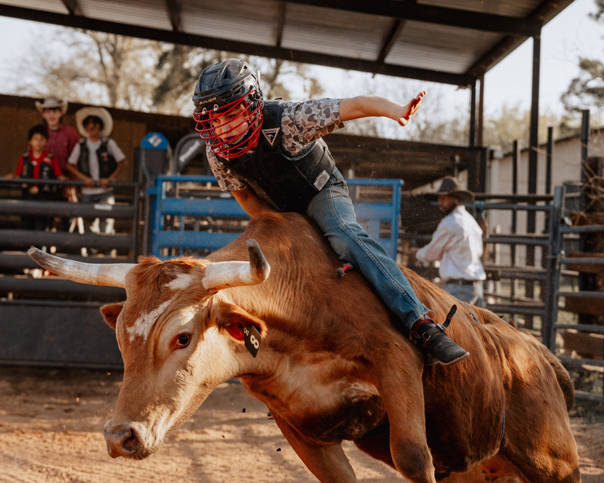
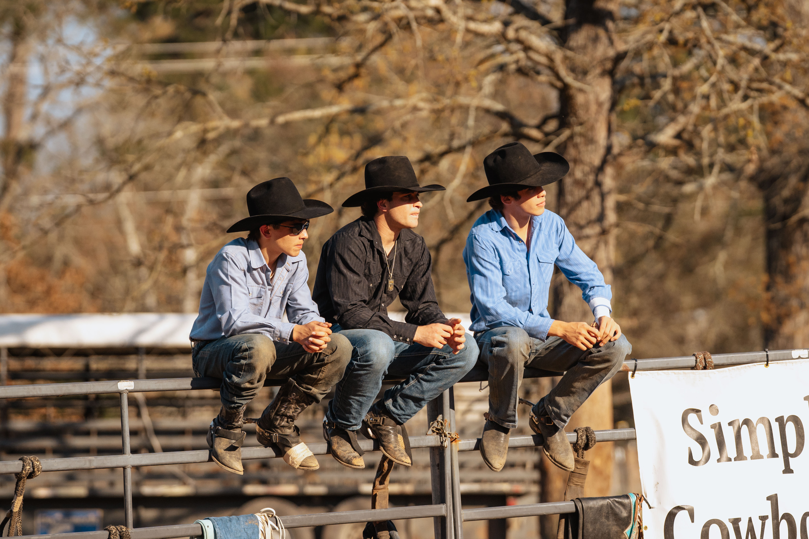

Build Your Outdoor Photography Portfolio at the Outdoorsman Photo Workshop in Utah
There is a big gap between taking good outdoor photos and creating images that actually look like they belong in a brand campaign.
Read the article ->Featured Article
There is a big gap between taking good outdoor photos and creating images that actually look like they belong in a brand campaign.
Read the article ->Topics
Camera craft, planning, portfolio building, and practical field technique for stronger image libraries.
There is a big gap between taking good outdoor photos and creating images that actually look like they belong in a brand campaign.
Brand photography is the set of photos that shows who your business is, what you do, who you serve, and what makes you worth trusting.
A good content day can give your brand enough photos and video to use for weeks or even months.
A good outdoor photographer needs to do more than take sharp photos.
Western, ranch, outfitter, and event-adjacent stories that help people understand the full experience.
Ranches, farms, and western businesses are built on work that is hard to stage.
Western lifestyle photography is not just boots, hats, horses, and sunsets.
Most hunting outfitters know how to run a great hunt.
A lot of hunting ranches look the same online.
Brand strategy, pricing, usage, shot lists, and planning articles for businesses that need useful images.
There is a big gap between taking good outdoor photos and creating images that actually look like they belong in a brand campaign.
Houston may be known for oil, space, and big business, but it is also a strong home base for outdoor brands that need real photos built around real use.
The honest answer is simple: it depends on the job.
A good content day can give your brand enough photos and video to use for weeks or even months.
Hunting, fishing, gear, lodges, ranches, and real environments where outdoor stories actually happen.
There is a big gap between taking good outdoor photos and creating images that actually look like they belong in a brand campaign.
Texas gives outdoor brands something hard to fake: range.
A lot of outdoor brands run into the same problem: they have a good product, but every photo looks like an ad.
Most hunting outfitters know how to run a great hunt.
Remote production, backcountry planning, weather-aware field work, and stories that require going where the work happens.
There is a big gap between taking good outdoor photos and creating images that actually look like they belong in a brand campaign.
An expedition photographer is someone who can go where the story happens.
A good outdoor photoshoot starts long before the camera comes out.
A hunting jacket should look like it has been in the woods.
Article Library

An expedition photographer is someone who can go where the story happens.
There is a big gap between taking good outdoor photos and creating images that actually look like they belong in a brand campaign.

Outdoor commercial photography is more than taking good-looking photos outside. It is about showing a brand, product, place, or experience in a way that feels real...
A lot of outdoor brands run into the same problem: they have a good product, but every photo looks like an ad.

Most hunting outfitters have photos of big animals.
The honest answer is simple: it depends on the job.

A good outdoor photoshoot starts long before the camera comes out.

A hunting jacket should look like it has been in the woods.

A great fish photo matters.

A lot of hunting ranches look the same online.

A good outdoor photographer needs to do more than take sharp photos.
Houston may be known for oil, space, and big business, but it is also a strong home base for outdoor brands that need real photos built around real use.

Texas gives outdoor brands something hard to fake: range.

Most hunting outfitters know how to run a great hunt.

Ranches, farms, and western businesses are built on work that is hard to stage.

Western lifestyle photography is not just boots, hats, horses, and sunsets.

A good content day can give your brand enough photos and video to use for weeks or even months.

Brand photography is the set of photos that shows who your business is, what you do, who you serve, and what makes you worth trusting.

There is no hard rule for how often a brand should update its website photos.
Bison Creek Media
Build a content library for your brand, outfitter, lodge, ranch, or field-focused business.
Start a Project